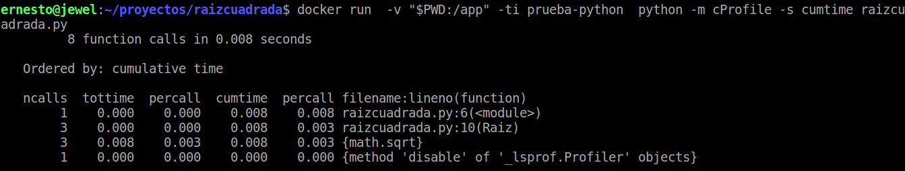

Profiling de un script Python con la herramienta cProfile
Posted on lun 13 junio 2016 in Tutorial Python • 2 min read
Hace un tiempo toque el tema de herramientas de profiling para Python (ver enlace).
Hay otras herramientas como cProfile que se pueden usar y son menos invasiva que las de los artículos anteriores, quiero decir, no necesitan modificar el código de la aplicación para que sea utilizada.
Como script de prueba usaré el mismo de raíz cuadrada que se encuentra en mi repo en github, el mismo de los artículos sobre pruebas unitarias, pruebas unitarias con docker, pruebas de documentación, pruebas de documentación con docker y el de pylint con docker.
No se necesita instalar nada para usar cProfile.
El código del módulo raíz cuadrada es el siguiente:
#!/usr/bin/env python3
# -*- coding: utf-8 -*-
"""
Se importa el módulo math para calcular la raiz cuadrada.
"""
import math
#Función raiz cuadrada.
def Raiz(a):
"""Si a es mayor o igual a cero se calcula la raiz cuadrada"""
if a >= 0:
return math.sqrt(a)
#Si es menor a cero se genera una excepción donde se informa que a debe ser mayor o igual a cero.
else:
raise ValueError("a debe ser >= 0")
if __name__ == '__main__':
#Se importa el módulo doctest
#import doctest
#Se realiza la prueba al archivo raizcuadra.txt
#doctest.testfile("raizcuadrada.txt")
Raiz(5)
Raiz(9)
Raiz(25)
#Raiz(-1)
Para ejecutar cProfile:
python -m cProfile -s cumtime raizcuadrada.py
8 function calls in 0.000 seconds
Ordered by: cumulative time
ncalls tottime percall cumtime percall filename:lineno(function)
1 0.000 0.000 0.000 0.000 raizcuadrada.py:6(<module>)
3 0.000 0.000 0.000 0.000 raizcuadrada.py:10(Raiz)
3 0.000 0.000 0.000 0.000 {math.sqrt}
1 0.000 0.000 0.000 0.000 {method 'disable' of '_lsprof.Profiler' objects}
Esto mismo se puede ejecutar desde el contenedor que se usó en el artículo de pyLint:
docker run -v "$PWD:/app" -ti prueba-python python -m cProfile -s cumtime raizcuadrada.py
A continuación se muestra una figura de la ejecución del comando:

Para más información pueden revisar la documentación oficial de python, un artículo en inglés sobre cProfile y una guía de análisis de rendimiento para python.
¡Haz tu donativo! Si te gustó el artículo puedes realizar un donativo con Bitcoin (BTC) usando la billetera digital de tu preferencia a la siguiente dirección: 17MtNybhdkA9GV3UNS6BTwPcuhjXoPrSzV
O Escaneando el código QR desde la billetera: